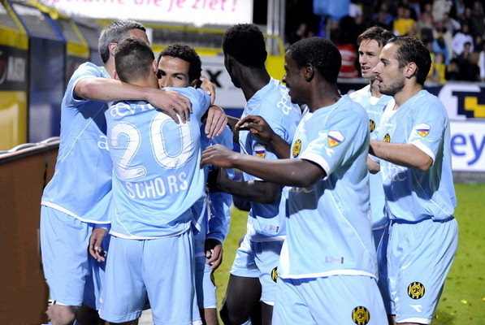

De klus is geklaard. Roda heeft het onmogelijke gepresteerd. Na eerst aan
het fusiespook ontsnapt te
zijn werd in een voetbalthriller na strafschoppen eveneens met het
degradatiespook afgerekend.
Roda JC heeft zich woensdag na een ware thriller gehandhaafd in de
Eredivisie. Cambuur werd in de beslissende wedstrijd van de play-offs met
strafschoppen bedwongen. Na 90 minuten stond het 1-1, na 120 minuten 2-2.
Bram Castro was in de penaltyserie met twee reddingen de held van de
Limburgse formatie.
Roda JC, dat flink gehavend naar Friesland was afgereisd, begon opvallend
genoeg het beste aan het duel in Leeuwarden. Een bal uit klutssituatie werd
door Randy Rustenberg van de doellijn gehaald en een vrije trap van Davy de
Fauw had meer kunnen opleveren. Cambuur had moeite met het
viermansmiddenveld van de Limburgers, maar nadat het de organisatie op orde
had kropen de Friezen wat meer uit de defensieve stellingen.
Na ruim een half uur leverde dat de openingstreffer op van Rachied El
Khalifi. Ruud ter Heide kon de bal na slap Limburgs verdedigen voorzetten,
waar de ook al geheel vrijstaande El Khalifi van dichtbij kon inkoppen. Roda
JC moest vanaf dat moment wel naar voren, maar gevaarlijk werd de formatie
pas na ruim een uur spelen. Anouar Hadouir kreeg de bal van dichtbij echter
niet achter doelman Peter van der Vlag. Kort daarop stuitte de aanvaller
opnieuw op de sluitpost.
Tussendoor had Cambuur het duel overigens al kunnen beslissen. Marcel de
Jong haalde een kopbal van Ter Heide echter van de lijn en El Khalifi
stuitte na een counter op keeper Bram Castro. Op het moment dat de flessen
champagne in Leeuwarden al ontkurkt werden, kwam Roda JC alsnog langszij via
Boldiszar Bodor en moest er een verlenging aan te pas komen.
Daarin sloeg Roda JC na acht minuten toe. Hadouir nam bij het uitverdedigen
veel risico, zette de aanval vervolgens zelf op en rondde ook af: 1-2. Die
schade leek voor het moegestreden Cambuur, na zes wedstrijden in zestien
dagen, niet meer te herstellen maar een handsbal van Laurent Delorge bracht
de ploeg een strafschop die door Michael Jansen werd benut.
Diezelfde Michael Jansen miste daarna in de strafschoppenserie, net als zijn
ploeggenoten El Khalifi en Mark de Vries. Bij Roda JC miste Bodor, maar het
was voldoende voor handhaving.
Bron: fcupdate.nl